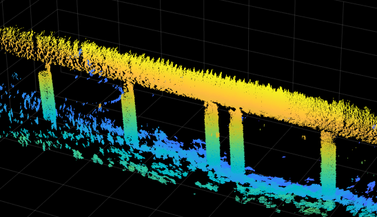
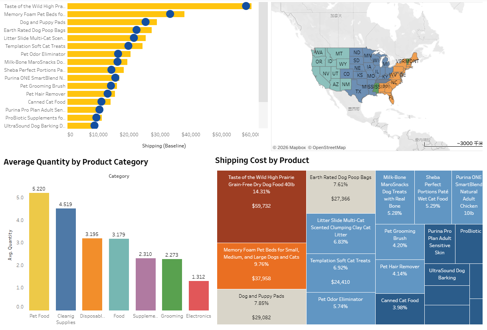

Hello! I'm
LI Zixin Olivia
Candidate for MSc in AI and Business Analytics,
Class of 2026
Open to work
Seeking for a job opportunity in Data Analytics / IT Business Analytics.
Hello! I'm
Candidate for MSc in AI and Business Analytics,
Class of 2026
Seeking for a job opportunity in Data Analytics / IT Business Analytics.
Hello, my name is LI Zixin Olivia, I am a prospective MSc student in AI and Business Analytics at Lingnan University. With a Bachelor's degree in Robotics Engineering, I bridge technical AI development with strategic business insights. My academic background has equipped me with solid foundations in algorithm design, data processing, and intelligent system development. I am eager to further explore how artificial intelligence can optimize business operations, drive innovation, and create competitive advantages in the digital era. By combining my engineering mindset with analytical and business thinking, I aim to become a versatile professional capable of solving complex industry challenges. I look forward to deepening my knowledge and expanding my vision through the rigorous and interdisciplinary training at Lingnan University.
Lingnan University
Xiamen University Tan Kah Kee College
E-commerce & AI Marketing Assistant
AI Algorithm Intern

Jan 2026 – Present
YOLOv26s + ByteTrack with KNN background subtraction for motion-filtered detection, crowd alerting, and ROI monitoring. Deployed as a live Streamlit dashboard.
Jan 2026 – Mar 2026
Dueling DQN agent trained via self-play on International Checkers, featuring custom reward shaping and a Pygame GUI for human vs. AI gameplay.


Oct 2025 – Dec 2025
Self-supervised 3D reconstruction of underwater structures using RANSAC-estimated reference models and a Point Completion Network, trained on real sonar scans without manual labels.
Sep 2025 – Dec 2025
Using Tableau to create a dashboard for data analytics, about Munchys Pet Supply dataset.
